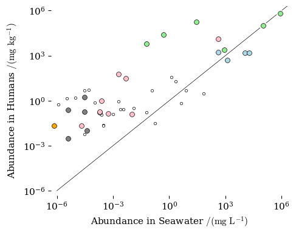

Elements in the Biosphere#
Now we will plot data sets of elements in the Earth’s crust, see and living things.
Some of my data sets have symbols but not atomic numbers and vice versa. I also need average atomic weights so that I can convert between mole fractions and mass fractions. I found a table of alleged periodic table data at a random website selling data analysis software. I edited the file to include comments about the source and a set of column names. I should check the masses by comparing the values to the National Institute of Standards and technology (NIST) data, but I’m lazy enough to trust iy.
Collect data into DataFrames#
I will load in the csv data from the periodic table data set. I named the edited file as atomicinfo.csv
| number | symbol | name | mass | |
|---|---|---|---|---|
| 0 | 1 | H | Hydrogen | 1.007940 |
| 1 | 2 | He | Helium | 4.002602 |
| 2 | 3 | Li | Lithium | 6.941000 |
I found a set of data from a textbook. I had to type in the numbers as it was available on paper only. The data is in the file SphericalCow.csv
Harte, J., “Consider a Spherical Cow: A Course in Environmental Problem Solving.” University Science Books, Berkeley, 1988, p.243 isbn:978-0935702583
| symbol | crust | seawater | biomass | |
|---|---|---|---|---|
| 0 | O | 456000.0 | 857000.00 | 630000.0 |
| 1 | Si | 273000.0 | 3.00 | 15000.0 |
| 2 | Al | 83600.0 | 0.01 | 500.0 |
Now I will combine the two data sets to create a new data set that is the intersection of the two according to atomic symbol, which is common to both sets.
| number | symbol | name | mass | crust | seawater | biomass | |
|---|---|---|---|---|---|---|---|
| 0 | 1 | H | Hydrogen | 1.00794 | 1520.0 | 108000.0 | 80000.0 |
| 1 | 5 | B | Boron | 10.81100 | 9.0 | 4.6 | 100.0 |
| 2 | 6 | C | Carbon | 12.01070 | 180.0 | 28.0 | 200000.0 |
Plotting with Plotly - Minimal Example#
The following plots are all done with the Plotly library of Python. The plot code looks complicated but it is just a series of commands. the plots below are mostly style commands.
Below is a minimal code example with no alternative styling or extra commands applied. It will produce an interactive plot.
import plotly.express as px
fig = px.scatter(final_df, # plotly acceses dataframe directly
x="crust", # the dataframe column to use for x
y="biomass", # the dataframe column to use for y
width=500, height=500, # set the size of the figure
hover_data=["symbol"], # add the symbol column to the hover tooltip
log_y=True, log_x=True, # use log scale for both axes
)
fig.write_html("minimal.html", include_plotlyjs="cdn")
fig.show()
Click here to See Interactive Plot (just in case it doesn’t appear on this page).
The code above makes a plotly object. the final two lines produce the output. The html file is saved and then can be shown in a browser. We had to make the html file for the web book you are reading, but you can skip that step and just do fig.show() to see the plot in your browser.
The fig.show() command will display the plot in the Python notebook on Google colab, if you go there. If the plot is shown in youe webbrowser, it should be interactive. Explore it with your mouse.
Plot the Data for Biomass vs Crust#
The below plot will be an interactive Plotly graph. You can query the points with your mouse to see which element is where.
The plot has abunsance in the biomass of the Earth on the y-axis and in the crust on the x-axis.
Click here to See Interactive Plot (just in case it doesn’t appear on this page).
The diagonal is where x=y. We see that for some elements there is more abundance in biomass than in the crust and vice versa. Life is selective about its elements.
Other Data Sets#
The data set presented by Harte has no reported source. I will compare it to a data set from Wikipedia for elemental composition of the human body. Humans may be different that the sum of the biosphere, lets see.
Comparing Biological data Sets#
I will load in the data from the file HumanBodyWikipedia.csv, combine it with the data from Harte and plot the values for biomass vs human and see how they compare.
First, here is the data from Wikipedia.
| number | name | human ppm | |
|---|---|---|---|
| 0 | 8 | Oxygen | 650000.0 |
| 1 | 6 | Carbon | 180000.0 |
| 2 | 1 | Hydrogen | 100000.0 |
Now we will merge with the Harte data set (which had already been merged with the periodic table dataset).
| number | name | human_ppm | symbol | atomic_mass | crust | seawater | biomass | |
|---|---|---|---|---|---|---|---|---|
| 0 | 8 | Oxygen | 650000.0 | O | 15.99940 | 456000.0 | 857000.0 | 630000.0 |
| 1 | 6 | Carbon | 180000.0 | C | 12.01070 | 180.0 | 28.0 | 200000.0 |
| 2 | 1 | Hydrogen | 100000.0 | H | 1.00794 | 1520.0 | 108000.0 | 80000.0 |
Plotting Comparison of Biological Data Sets#
The plot below plots the elemental abundance in humans data set from Wikipedia against the data set for biomass from Harte.
Click here to See Interactive Plot (just in case it doesn’t appear on this page).
webbook/chapters/03-water/01-ElementsOnEarth/plot_abundance_human_biosphere2.html
The diagonal is where x=y.
We see good agreement between harte and the Wikipedia data set for Humans where the numbers are large. Trace elements scatter more. The biosphere is different than humans.
Human (Wikipedia) vs Crust (Harte)#
The plot below plots the data set for the elemental abundance in humans data set from Wikipedia against the elemental abundance in the Earth’s crust from Harte.
Click here to See Interactive Plot (just in case it doesn’t appear on this page).
The diagonal is where x=y. We see that for some elements there is more abundance in humans than in the crust and vice versa. Life is selective about its elements.
Human (Wikipedia) vs Seawater (Harte)#
The plot below plots the data set for the elemental abundance in humans data set from Wikipedia against the elemental abundance in seawater from Harte.
Click here to See Interactive Plot (just in case it doesn’t appear on this page).
The diagonal is where x=y. We see that for some elements there is more abundance in humans than in the seawater and vice versa. Life is selective about its elements.
Human (Wikipedia) vs Crust (Wikipedia data page)#
This plot will use the elemental abundance in humans reported on Wikipedia against the abundance reported for the crust reported in the Wikipedia data page for elemental abundance. I will use the data tables that I extracted, HumanBodyWikipedia.csv and ElementsInCrust-WikipediaDataPage.csv.
I will use the periodic table data, human data from wikipedia, and crust data from the wikipedia data page (column for the values collected by Earnshaw and Greenwood — column C3 in the data table). I will load in each data set, combine them and then plot human vs crust as above.
Note in the data set the following sources of values are present:
human: elemental abundance in humans compiled in the Wikipedia page.
C1: abundance in the crust according to the CRC Handbook
C2: abundance according to Kaye and Laby
C3: abundance according to Earnshaw and Greenwood
C4: abundance according to Taylor and McLennan
C5: abundance according to Wänke, Dreibus, and Jagoutz
C6: abundance according to Weaver and Tamey
U1: abundance in surface crust according to Taylor and McLennan
U2: abundance in surface crust according to Shaw, Dostal, and Keays
W1: abundance in seawater according to the CRC handbook
W2: abundance in seawater according to Kaye and Laby
References are in the Wikipedia data page for elemental abundance.
| number | symbol | name | atomic_mass | human | essential | C1 | C2 | C3 | C4 | C5 | C6 | U1 | U2 | W1 | W2 | |
|---|---|---|---|---|---|---|---|---|---|---|---|---|---|---|---|---|
| 0 | 1 | H | Hydrogen | 1.007940 | 1.000000e+05 | yes | 1400.000 | NaN | 1520.0 | NaN | NaN | NaN | NaN | NaN | 108000.000000 | 110000.000000 |
| 1 | 2 | He | Helium | 4.002602 | 2.039000e-14 | NaN | 0.008 | NaN | NaN | NaN | NaN | NaN | NaN | NaN | 0.000007 | 0.000007 |
| 2 | 3 | Li | Lithium | 6.941000 | 3.100000e-02 | NaN | 20.000 | 20.0 | 18.0 | 13.0 | 13.7 | NaN | 20.0 | 22.0 | 0.180000 | 0.170000 |
The data has been collencted and cleaned. Data sets were combined and units converted. You don’t have to ask me what I did, its all there in the code above. Providing your code for data analysis is the best way to document your methods.
The code below will make an interactive plot.
Human (Wiki) vs Seawater (Wiki)#
Let us compare humans to seawater
Seawater (Wiki) vs Crust (Wiki)#
Let us compare seawater to crust.
Figure for the Textbook#
In the textbook I chose to present the comparison of abundance in mumans vs seawater using the data from the wikipedia data pages for elemental abundance in the Earth and in Humans.
df.head(3)
| number | symbol | name | atomic_mass | human | essential | C1 | C2 | C3 | C4 | C5 | C6 | U1 | U2 | W1 | W2 | |
|---|---|---|---|---|---|---|---|---|---|---|---|---|---|---|---|---|
| 0 | 1 | H | Hydrogen | 1.007940 | 1.000000e+05 | yes | 1400.000 | NaN | 1520.0 | NaN | NaN | NaN | NaN | NaN | 108000.000000 | 110000.000000 |
| 1 | 2 | He | Helium | 4.002602 | 2.039000e-14 | NaN | 0.008 | NaN | NaN | NaN | NaN | NaN | NaN | NaN | 0.000007 | 0.000007 |
| 2 | 3 | Li | Lithium | 6.941000 | 3.100000e-02 | NaN | 20.000 | 20.0 | 18.0 | 13.0 | 13.7 | NaN | 20.0 | 22.0 | 0.180000 | 0.170000 |

<Figure size 500x400 with 0 Axes>